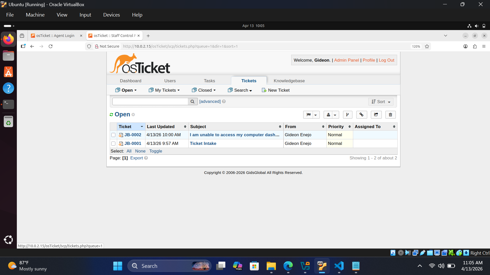
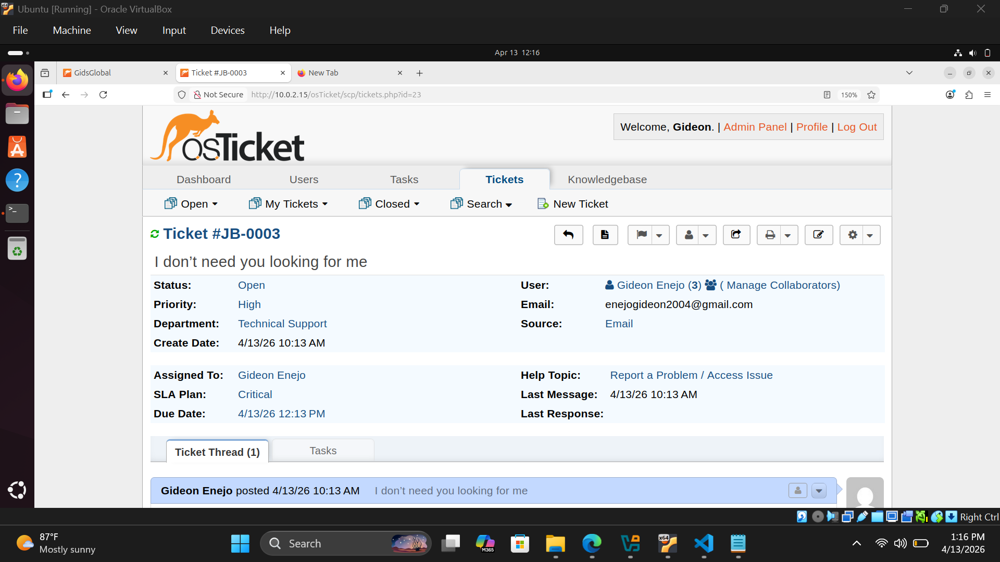
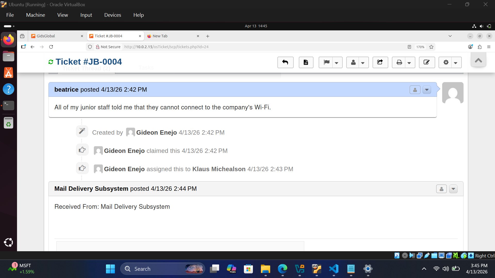
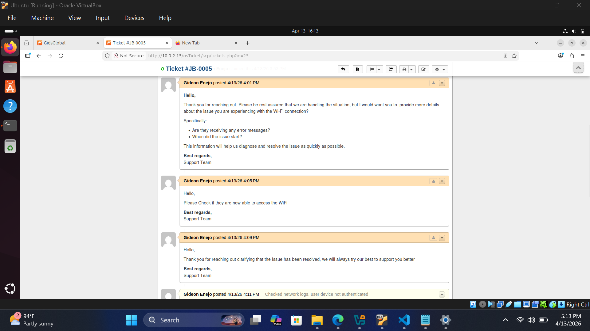
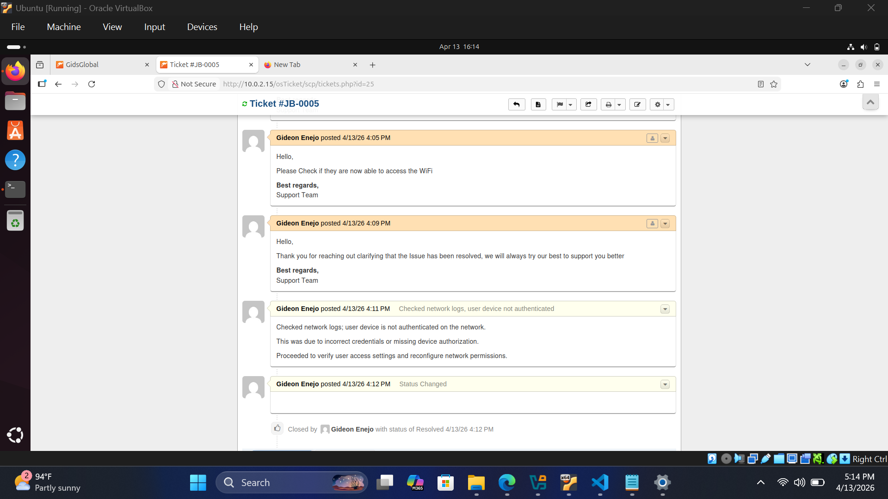
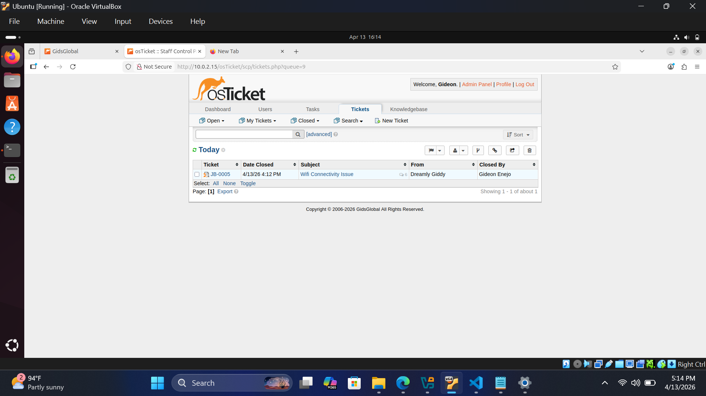
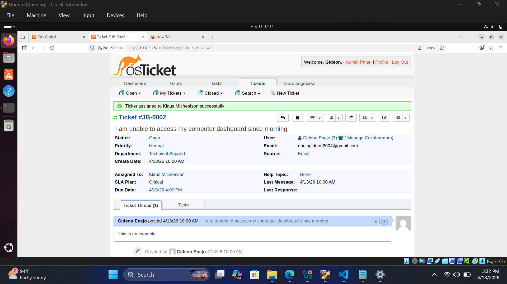

Ticket Intake
The ticket intake stage is the entry point of the support workflow, where user issues are captured, logged, and prepared for processing within the system. A well-structured intake process ensures that all necessary information is collected early, reducing delays and improving resolution time.
Ticket Creation
Its important to understand how to create tickets within the osTicket system.
Ticket Submission Channels
Tickets can be created through multiple channels depending on how users interact with the system:
| Channel | Purpose |
|---|---|
| Email Integration | Users send an email to a support address, and the system automatically converts it into a ticket. |
| Web Portal | Users submit requests through a structured form, ensuring required fields are filled. |
| Agent Created Tickets | Support agents manually create tickets on behalf of users (e.g., phone or in-person requests). |
System Actions During Intake
Once a ticket is submitted, osTicket performs several automated actions:
- Generates a unique Ticket ID for tracking
- Captures user details such as name and email
- Records the submission timestamp for SLA tracking
- Applies default system settings such as department routing (if configured)
Data Captured at Intake
To ensure effective processing, the following information is typically collected:
- User name and contact information
- Issue title or subject
- Description of the problem
- Attachment support (screenshots, documents)
- Help topic or category (if configured)
For Example (A user sends an email:)
I am unable to access my company dashboard since this morning.
- Email is fetched via IMAP or SMTP configuration
- A ticket is automatically created
- The subject becomes the ticket title
- The email body becomes the ticket description
Screenshot: Ticket Creation Example
Example of a ticket created from an email submission, showing the ticket name which is subject and Sender.

Best Practices for Effective Ticket Intake
- Use custom forms to capture relevant information upfront
- Enable email piping or fetching for automation
- Define help topics to guide user submissions
- Ensure required fields are enforced
- Keep intake simple to avoid user frustration
Ticket Classification and Prioritization
This stage ensures that every ticket is properly organized and assigned the right level of urgency. Proper classification helps route tickets to the correct team while prioritization ensures critical issues are handled first.
Ticket Classification
Assign appropriate categories and labels to tickets for better organization.
What Happens During Classification & Prioritization
After a ticket is created, it is organized to ensure it is handled by the right team and given the correct level of urgency. This step helps streamline support and ensures important issues are prioritized:
- The ticket is assigned to the appropriate Department (e.g., IT Support, Network, Accounts)
- A Priority Level, SLA, or Department can also be set based on the Help Topic configuration depending on how the system is set up
- The ticket is reviewed to confirm it is correctly categorized
- If necessary, updates are made to ensure the ticket is properly routed and prioritized
Ticket Priority Levels (Default Configuration)
During the classification and prioritization process, tickets are assigned default priority levels based on impact and urgency:
| Priority Level | Description | Impact Example |
|---|---|---|
| Low | Minor issues with little or no disruption | Small UI issue or general inquiry |
| Medium | Moderate impact on a single user or task | User unable to access a specific feature |
| High | Significant disruption affecting work | Department workflow interruption |
| Critical | System-wide failure or major business impact | Entire system outage or service downtime |
This ensures that high-impact issues are identified early and prioritized correctly for faster resolution.
SLA Mapping (Service Level Agreement)
SLAs define the allowed grace period for each ticket priority level. These grace periods determine how long a ticket can remain open before it is considered delayed or out of compliance.
| SLA Level | Grace Period | Business Impact | Example Scenario |
|---|---|---|---|
| Critical | 2 Hours | Severe impact on business operations | Entire system or service outage |
| High Priority | 4 Hours | Significant disruption to daily operations | Important application not working |
| Standard | Business Hours (including holidays) | Low impact or minor issues | Single user issue or general request |
These grace periods ensure that tickets are managed within acceptable time limits based on their business impact.
Screenshot: Classification and Prioritization Example
Example of a ticket being classified into the Technical Support department, Classified SLA as Critical, whereas the priority is set to High. This ensures that the ticket is routed to the correct team and given the appropriate level of urgency for resolution.

Assignment and Acknowledgment
Once a ticket is created and categorized, it is assigned to the appropriate agent or support team for handling. This step ensures clear ownership and timely response.
Assign Tickets to Agents
Assign tickets to the appropriate agent or support team based on their expertise and workload.
What Happens During Assignment & Acknowledgment
Once a ticket is created and categorized, it is assigned to ensure clear ownership and proper handling:
- The ticket is assigned to a specific agent or department based on configuration or manual selection
- The assigned agent is notified of the new ticket
- The user receives an acknowledgment message confirming receipt of their request
- Responsibility for the ticket is clearly established
- If the ticket was not initially assigned to an agent, the first agent to respond or send a reply automatically becomes the handler of the ticket
- The assigned agent also has the ability to reassign the ticket to another agent or department if necessary
Screenshot: Example of Ticket Assignment
Example of a ticket being acknowledged and assigned to an agent for resolution.

Investigation and Work-in-Progress
Once a ticket is assigned, the responsible agent begins diagnosing and working toward resolving the issue.
Investigate and Work on Tickets
Diagnose the issue and work on resolving the ticket.
Key Activities During Investigation
- Analyze the issue based on the information provided
- Communicate updates or responses to the user
- Add internal notes for team collaboration (not visible to the user)
- Request additional information if the issue is unclear
Investigation Example – Wi-Fi Connectivity Issue
Agent opens the ticket → Reviews details → Troubleshoots network issue → Adds internal notes → Resolves authentication problem



Escalation
When a ticket cannot be resolved at the current support level, it is moved to escalation for advanced handling.
Escalate Tickets
Move tickets to higher support levels for advanced handling.
What Happens During Escalation
- Move the ticket to a higher-level support team (e.g., System Administrators)
- Review and update the ticket priority or SLA if required
- Assign the ticket to more experienced personnel
- Trigger immediate response for critical issues (e.g., 24/7 support)
Escalation Example – Server Outage Issue
Agent identifies a critical server outage → Reviews ticket details → reassigned to System Administrators → Priority is upgraded to Critical

Ticket Closure and Documentation
Once the issue has been resolved and confirmed by the user, the ticket is formally closed and properly documented for future reference.
Close and Document Tickets
Ensure resolution is confirmed, documented, and the ticket is properly closed.
Key Actions During Ticket Closure
- Update ticket status to Closed after user confirmation
- Record detailed resolution notes for future reference
- Ensure SLA compliance is properly logged
- Document troubleshooting steps for knowledge sharing
- Optionally update the knowledge base for recurring issues